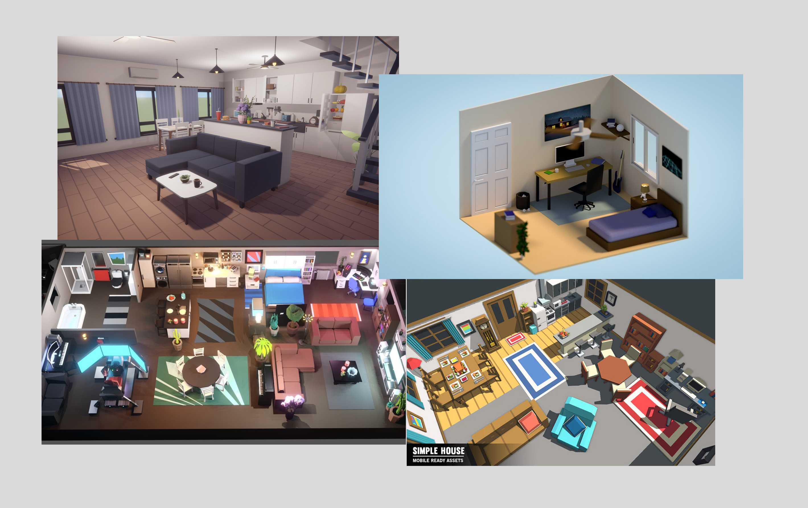
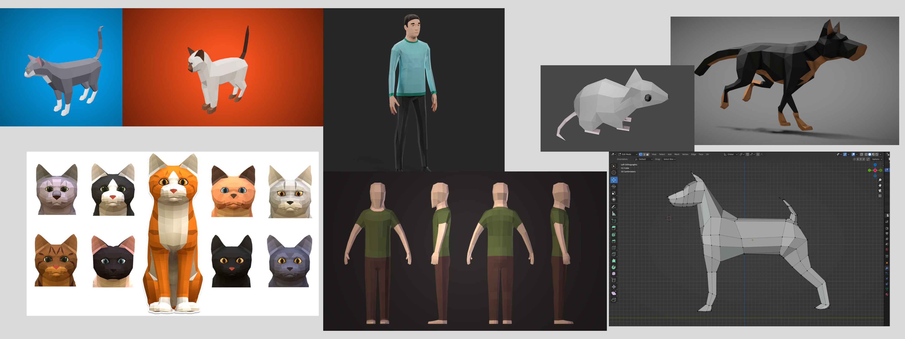

Concept
Storyline
You are a stray cat seeking shelter from a heavy storm. You sneak into an apartment at night through an open window, but in the morning, the window is closed — and now you're trapped inside. Find your way out before you're made a meager house cat and the ridicule of the neighborhood. To escape, you'll need to cause chaos by knocking over objects, scratching furniture, and exploring the apartment. The more mess you make, the more points you earn. These points unlock access to new rooms (e.g. living room, kitchen, bathroom) and ultimately, the front door.
But be careful…
- The human starts patrolling the apartment. If they catch you, it’s all over — you’ll be adopted, losing your freedom forever.
- Worse still, there’s a dog in the apartment too. Unlike the human, the dog is fast and unpredictable, adding an extra layer of tension.
You’ll have to hide, sneak, and dash your way through this chaos-filled apartment if you want to escape back to your wild life.
Gameplay Loop
- Start in hallway (first zone).
- Cause chaos to earn points.
- Unlock next area when enough points are gathered.
- Avoid enemies while continuing to wreak havoc.
- Avoid enemies while continuing to wreak havoc.
- Reach the final exit door to escape.
- Fail Condition: Get caught by either the human or dog = Game Over (Adoption).
- Win Condition: Escape through the front door = Stay wild.
Features
| Feature | Description |
|---|---|
| Score System | Earn points by interacting with and damaging objects. |
| Unlockable Rooms | Reach point thresholds to open new rooms in a linear progression: Bedroom → Living Room → Kitchen → Bathroom → Exit. |
| Procedural Object Spawning | Items are randomly placed per room on each playthrough (e.g., toilet paper in bathroom, cups in kitchen). |
| Human Chaser | Patrolling enemy with sound and vision-based detection. Moves slowly, but uses smart search behavior. |
| Dog Chaser | Introduced mid/late-game. Fast, has a dash ability, and operates on simpler, aggressive AI. |
| Stealth & Hiding | Hide under furniture, manage noise levels, and break line-of-sight to survive. |
| Failure State | Getting caught triggers the adoption ending. |
| Victory State | Users do not get warned about losing their progress when cancelling post creation |
| Replayability | Escape through the front door to preserve your stray cat lifestyle. |
Aesthetic
Environment
Characters
Game References

UI